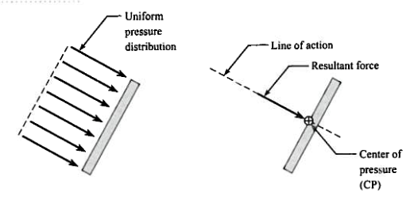
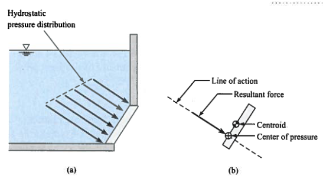
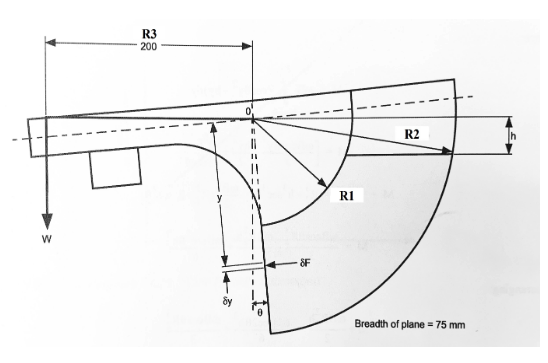

Lab 2 - Fluid Statics#
Course Website
Readings#
Videos#
Outline#
Archimedes’ Principle
Hydrostatic Forces on Submerged Planar Surfaces
Archimedes’ Principle#
Archimedes’ principle states that an object submerged in a fluid experiences an upward buoyant force equal to the weight of the displaced fluid. For partially submerged objects, the buoyant force corresponds to the weight of the volume of the submerged portion.
Key Points:
Fully Submerged Objects: The volume of the displaced fluid equals the object’s volume.
Partially Submerged Objects: The buoyant force balances the object’s weight, ensuring it floats without sinking or rising.
Archimedes principle is useful to find the volume of irregularly shaped objects - Simply submerge them into a liquid and measure the volume displaced. Similarily it is useful for determining the density of irregularly shaped objects. (The curated videos above have examples of these applications).
A more detailed representation is
when a solid object is fully or partially submerged into a liquid then the upward buoyant force exerted by the liquid on the object is equal to the weight of the liquid displaced by the object. Mathematically, this can be stated as:
where, \(V_f\) is the volume of the liquid displaced m3, \(\rho\) is the density of the liquid (\(\frac{\)kg}{m^3}\(), \)g\( is the gravitational acceleration and \)B\( is the buoyant force (\)N\() and \)W_f\( is the weight of the displaced liquid (\)N$).
Note
It is important to remember that when an object sinks to the bottom of the liquid in a container, there is still a buoyant force acting on it. This buoyant force is still equal to the weight of the liquid that is displaced. However, the upward buoyant force exerted on the object is insufficient to overcome the downward gravitational force which causes the object to sink. In this situation, as the object is fully submerged, the volume of the object is equal to the volume of the liquid displaced. The object will feel lighter than in air due to buoyancy.
When an object is floating on a surface (neither raising or sinking) then the volume of the liquid displaced by the object is not equal to the volume of the object. It is only equal to the volume of the object that is submerged in the liquid. However, the upward buoyant force of the liquid exactly balances the weight of the object.
Forces on Submerged Plane Surfaces#
When a uniform pressure acts on a plane surface:

The magnitude of the resultant force is the product of the plane area and the pressure.
The resultant force acts at the centroid of the plane area
The center of pressure (uniform pressure) is coincident with the centroid.
When a plane surface is submerged in a liquid:

The fluid createss a hydrostatic pressure distribution that increases linearly with depth.
The magnitude of the resultant force is the product of the plane area and the pressure at the plane area centroid.
The line of action of the resultant force acts at the center of pressure of the submerged area, which is deeper then the centroid of the plane area.
The force exerted by liquids on surfaces they come to contact with is important when determining engineering structures to hold fluids (e.g., tanks,reservoirs). If water is our liquid of interest, then the hydrostatic pressure exerted by the liquid varies linearly with depth.
For engineering design, we replace the pressure distribution with a resultant hydrostatic pressure acting at the centroid. This resultant force is obtained by multiplying the hydrostatic pressure with the cross-sectional area over which the liquid exerts the pressure. The pressure is assumed to act normal to this planar area. The point where the resultant pressure (force) is assumed to act is also referred to the center of pressure (see Figure above). The center of the pressure is defined as “the point in a plane at which the total liquid thrust is be acting normal on that plane”.
Experimental Setup#
This experiment uses a quadrant balance to measure the moment caused by hydrostatic forces on submerged surfaces. By balancing the apparatus and recording the moments, you can compare experimental results to theoretical calculations.
Key Procedure Highlights:
Adjust the apparatus to ensure accurate alignment of the plane surface.
Incrementally submerge the plane and record measurements of force and depth. (In our experiments we adjust the water depth instead)
Use the data to calculate hydrostatic forces and verify against theoretical predictions.
The quadrant balance provides a direct and practical way to understand hydrostatic forces, combining fundamental principles with hands-on experimentation.
Quadrant Balance Background#
The sketch below show the apparatus which permits the moment caused by the total liquid thrust on a wholly or partially submerged plane surface to be measured directly and compared with theoretical analysis.

The photograph below illustrates the apparatus set up in the laboratory

The following analysis (H314 Hydrostatic Bench User Manual) is applied to the general condition of plane surface at various angles when it is wholly or partially submerged in a liquid.
Consider an element at an inclined depth \(y\) and height \(\delta y\).
The force on this infinitesimal (itty-bitty) element can be written as:
Where, \(\gamma_w\) is the weight per unit volume of the liquid , \(W\) is the width of the plane normal to the direction of the force and \(h\) is the height to the water surface measured from the pivot point O (see the apparatus sketch).
The moment of force on element about the point O, \(\delta M\) can be written as
The total moment (M) over the entire submerged surface can be obtained by integrating:
The limits of integration in 8 depends upon whether the plane is fully sub- merged or partially submerged. For the fully submerged case, the limits are from R1 to R2 and the equation for the moment around point O can be written as:
This equation is of the form of y = mx + b,therefore, a plot of M against h will yield a straight line of gradient
This slope can be used to calculate the unknown specific weight \(\gamma_w\).
For a partially submerged plane, the limits of the integration are from \(R_2\) to \(hsec(\theta)\). The moment in this case is given as:
A plot of \(M + \frac{\gamma_w W R_2^2 h}{2}\) versus \(h^3\) will result in a straight line plot.
Laboratory Objectives#
This laboratory session focuses on understanding hydrostatic forces and buoyancy through theoretical and experimental analysis. Students will gain practical experience using the quadrant balance to investigate hydrostatic pressure distribution and the resultant forces on submerged surfaces.
The objectives are:
Apply Archimedes’ Principle to determine buoyant forces on submerged and partially submerged objects
Analyze Hydrostatic Forces on plane surfaces, calculating the resultant force and locating the center of pressure using theoretical methods
Use a quadrant balance to measure moments caused by hydrostatic forces and validate theoretical predictions.
Develop an Experimental Protocol:
Formulate a step-by-step plan for collecting, analyzing, and interpreting data related to hydrostatic forces and buoyancy.
Ensure the protocol includes considerations for accuracy, safety, and proper equipment usage.
Document the experiment(s) into a laboratory report and address the following in the report:
Displacement Volumes and Weights:
Obtain the density of water and other materials used in the lab for the measured temperature from a reputable source (textbook, web). Note the citation.
Calculate the volume of displaced water, \(\Delta V\), for all objects. Determine the buoyancy force, \(F_B\), on each object.
For fully submerged objects, calculate the volume of the object based on displacement.
Use the measured mass and the density of the object to calculate the volume of the objects.
How do they compare with volumes measured using water displacement?
For the floating object-Calculate the mass of the object using Archimedes principle.
How does this mass compare to the measured value?
Center of Pressure:
Calculate moment (M) for generated by each applied weight.
Using the \(\sum{M} = 0\) principle calculate the approximate vertical force for each set of measurements.
This force acts at a distance of \(\frac{3b}{8}\) from the planar surface. While this is strictly true only for partially submerged conditions; it is a first-order approximation for the fully submerged case as well.
Plot moment M (\(Nm\)) vs. height of depth of liquid, \(h\) (m) for the fully submerged dataset. Fit a straight line and compute the coefficient of determination \(R^2\).
Use the slope of the line from previous step - which is equal to \(- \frac{\gamma_w W}{2}(R_2^2-R_1^2)\). Using R1 = 100 mm and R2= 200 mm, calculate the weight of water per unit volume (\(\gamma_w\)).
Compare this value to the specific weight reported in the literature for the measured temperature. For the partially submerged dataset plot \(M + \frac{\gamma_w W R_2^2 h}{2}\) versus \(h^3\).
Fit a straight line and evaluate the adequacy of the fit using the coefficient of determination \(R^2\).
Compare Results:
Evaluate experimental results against theoretical expectations.
Identify potential sources of error and suggest improvements for future experiments.
Warning
The protocol is evaluated to ensure that the envisioned procedures can be safely conducted under appropriate supervision. The experiments may produce incomplete results if steps are ommitted.
Deliverables#
Develop an experimental protocol (step-by-step instructions) to measure density, specific gravity, and viscosity of three different liquids. Submitted in advance for instructor approval - the protocol will become part of your laboratory report. The protocol must contain instructions for populating the data tables shown in the next deliverable.
Laboratory Report documenting the actual experiments, and other required content including comparison to tabulated values. The data tables below should be fully populated in the report.
Bouyancy Experiments#
Material |
\(V_{initial}\) |
\(V_{final}\) |
\(\Delta V\) |
\(V_o\) geometry |
\(V_o\) displacement |
mass |
submerged(yes/no) |
|---|---|---|---|---|---|---|---|
Rock-1 |
|||||||
Rock-2 |
|||||||
Composite-1 |
|||||||
Composite-2 |
|||||||
Wood-1 |
|||||||
Wood-2 |
Quadrant Balance (Partial Submerge)#
Trial |
mass (grams) |
\(h\) mm |
\(b\) mm |
|---|---|---|---|
1 |
|||
2 |
|||
3 |
|||
4 |
|||
5 |
Quadrant Balance (Fully Submerge)#
Trial |
mass (grams) |
\(h\) mm |
\(b\) mm |
|---|---|---|---|
1 |
180 |
||
2 |
180 |
||
3 |
180 |
||
4 |
180 |
||
5 |
180 |